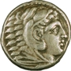
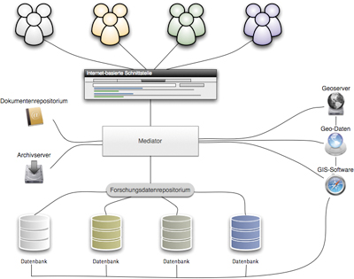
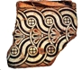

ArcheoInf
Bereitstellung von Primärdaten archäologischer Projekte
Projektidee – Was ist ArcheoInf?

ArcheoInf macht Primärdaten archäologischer Forschung, die bisher in heterogenen Datenstrukturen vorgehalten wurden, unter Wahrung ihrer Autonomie in einer gemeinsamen Umgebung web-basiert verfügbar:
Mit den archäologischen Primärdaten werden bibliothekarische Informationen und Dienstleistungen sowie geoinformatisches Datenmaterial verbunden.
Auf diese Weise entsteht ein umfassender Datenpool zur archäologischen Forschung, der den Datenbestand dezentral oder zentral auf Dokumentenrepositorium, Archiv- und Geo-Server nachhaltig verfügbar macht.
Bausteine – Was bietet ArcheoInf?

Einen Mediator, der fähig ist, in zahlreichen heterogenen archäologischen Datenbanken gleichzeitig zu recherchieren, ohne dass die Benutzer die Abfrageoberfläche wechseln müssen.
Einen möglichst viele Bereiche der Archäologie umfassenden Thesaurus und eine Semantic Web-basierte Ontologie, welche dem Mediator zugrunde liegen und eine komfortable Suche in archäologischen Daten ermöglichen.
Einen Archiv-Server und ein Dokumentenrepositorium, in denen im Sinne des Open Access-Gedankens auf archäologische Bild- und Sachdaten sowie elektronische Volltexte und bibliographische Daten zugegriffen werden kann.
Einen Geo-Server, der die Geoinformationen in standardisierter Form speichert und für die kartographische Darstellung über das Internet zuständig ist. Als Client dient ein WebGIS, bei dem als Hintergrundkarte verschiedene Dienste, wie Google Maps™ und World Wind, eingebunden werden. So kann sich der Anwender die Fundstellen komfortabel direkt auf der Karte mit variablem Maßstab präsentieren lassen. Raumbezogene Analysen sind über einzelne oder mehrere Projekte möglich. Um eine einheitliche Speicherung und Präsentation aller Geodaten gewährleisten zu können und zu dem GPS unmittelbar kompatibel zu sein, wird in ArcheoInf ausschließlich das Raumbezugssystem WGS84 (bzw. ETRS89) verwendet. Für Projekte, die örtliche Systeme oder das jeweils gültige Landeskoordinatensystem einsetzen, werden Transformationsalgorithmen, als Dienste automatisiert, eingerichtet.
Teilnahme – ArcheoInf und Partner

Ein zentraler Aspekt von ArcheoInf ist die Autonomie der Datenbanken; sie sollen in ihrer Struktur unverändert bleiben. In Arbeit befindliche Datenbanken werden möglichst wie gewohnt vom jeweiligen Projekt weitergepflegt. Abgeschlossene Datensammlungen können auf dem Archiv-Server langfristig abgelegt werden.
Ein Rechtemanagement erlaubt es, laufenden, noch unpublizierten Projekten ihre Daten auf die beteiligten Wissenschaftler zu beschränken, zugleich aber erste Ergebnisse z.B. in Forschungsberichten bereits selektiv frei zu schalten.
ArcheoInf versteht sich als für jedes archäologische Projekt offene Struktur. In der Projektphase arbeitet ArcheoInf mit mehreren Partnern verschiedener Universitäten und Forschungsinstitute zusammen. Ein wissenschaftlicher Beirat steht ArcheoInf zur Seite.